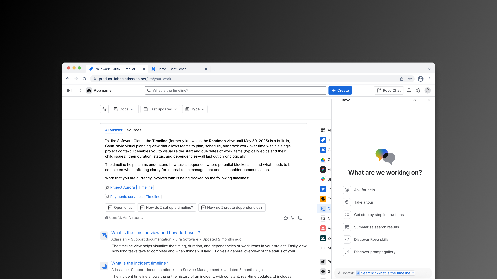
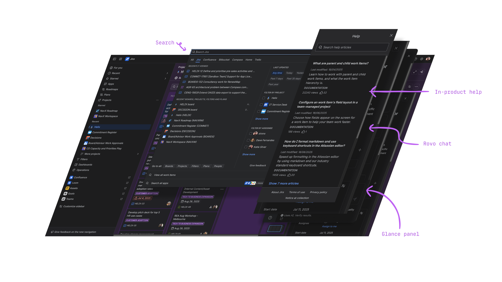
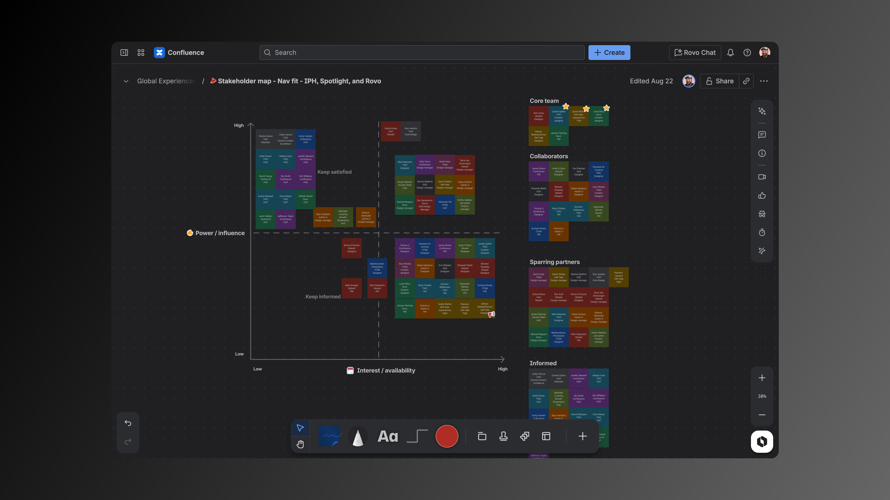
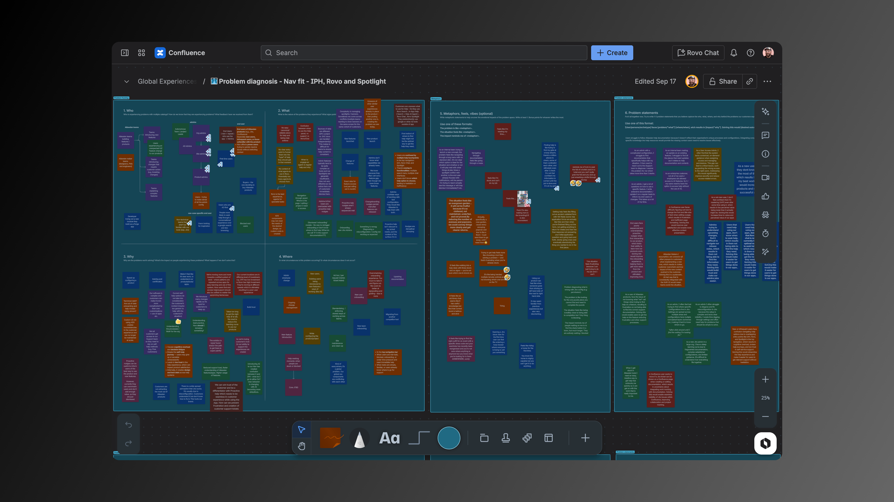
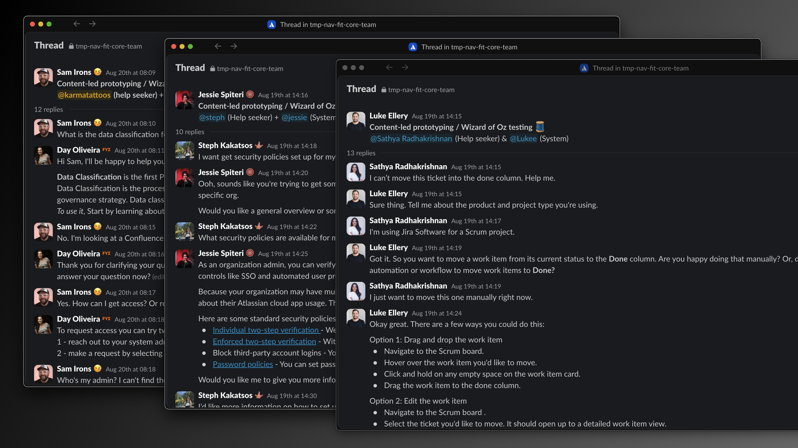
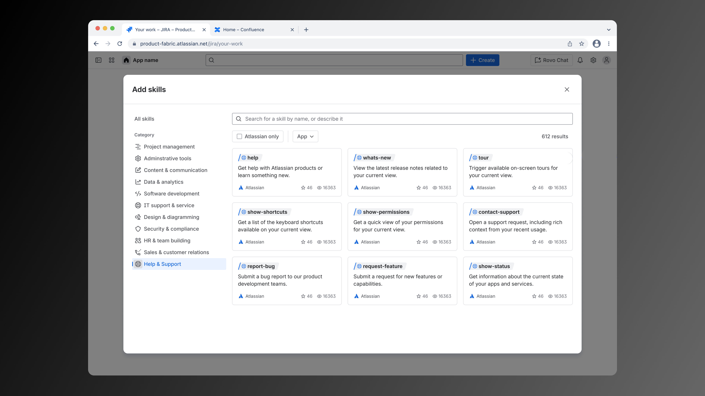

Atlassian's AI-driven help and support
Atlassian’s AI push surfaced a major UX conflict: fragmented, overlapping help and chat experiences. I led a two-month spike that defined a unified vision for contextual, proactive, and customizable AI-driven support across 20+ apps.
My role: Lead designer and directly
responsible individual (DRI)
Skills: Content design, product design, AI
experience design, service design, design strategy
The challenge

Help, chat, and other information experiences had grown organically across Atlassian’s ecosystem. Each pattern offered its own take on product usage guidance. The in-product help container, onboarding guide components, Rovo chat, and search experiences had strange interactions between them. And, our customers' behavior was changing with the introduction of LLM-based feaatures.
Atlassian’s leadership goal to “become an AI-first organization” demanded a unified vision for how helpseekers receive product usage information, reimagined in the time of AI.
My role and remit

I acted as the directly-responsible individual (DRI) — shaping the work, staffing the spike team, and delivering outcomes. I worked with design management to identify and secure the time of a few core team members, including content designers, product designers, product managers, and program managers.
I coordinated with more than thirty stakeholders, rallying the spike around async rituals like an end-of-week Loom summary, a realtime design gameplan document, and async whiteboards. These rituals tracked activities, ellicited participation from a broad group of stakeholders, and documented decisions that later became our recommendations.
This structure kept a diverse staekholder group distributed across the globe aligned without needing to sync face-to-face.
Approach
We ran the spike in three broad phases.
1. Wonder (problem definition and diagnosis)

We conducted stakeholder interviews, secondary research ("brain dumps"), journey mapping, jobs-to-be-done analysis, and synthesis of prior and existing art. Three key problem spaces emerged:
- The helpseeker’s journey, including how users configuring the system, learning the system, and troubleshooting the system get help and support to undertake these tasks.
- UI/UX pattern clashes, including inconsistent and competing interactions across universal search, Rovo Chat, the in-product help container, right side panels, feature spotlights, and other surfaces that support product usage information.
- Extending self-help experience to support custom-labeled enterprise and Marketplace help content within Atlassian’s system of work.
2. Explore (broad ideation and synthesis)

I ran all workshops both as in-person collab sessions and as asynchronous activities. This allowed contributors from India, Australia, and the United States to actively participate.
I wrote and collected "how might we" statements from our journey maps and jobs-to-be-done analysis to serve as stimulus for ideation. Paired with our problem statements, we sketched solutions using the familiar Crazy 8s technique.
In addition to traditional sketching, we used Slack as a surface for conversational prototyping, a new take on the Wizard-of-Oz method. We simulated conversations with an imagined Atlassian AI assistant.
The exercise turned abstract AI design problems into tangible interactions. It revealed new system requirements, including multimodal input and context-aware handoffs between AI and human help. And it informed the design of Rovo's voice and tone during helpseeking moments.
3. Make (concept development and recommendations)

As we explored broadly, I kept a record of design "decisions" we made along the way. These strongly formed, loosely held opinions formed the backbone of our recommendations and served as anchors for high-fidelity concept development.
Statements like, "good help is a conversation" led to indicative experience mocks placing Rovo AI chat at the center of Atlassian's support interaction. Other opionions, like "context is queen" helped drive conversations about Rovo's ability to read and understand contextual information about user permissions, system configurations, recent product analytic journeys, and other essential conversations within leadership.
Each mock demonstrated proactive and contextual behaviors where Rovo AI surfaces relevant documentation suggests related product actions. The concepts reduced conflicts between surfaces (retiring the old in-product help container entirely, for example), and proved support content could blend seamlessly with product UI.
Outcomes and impact
We shifted the conversation from “what are we doing with all these entry points” to “how should help behave in the time of LLM?” This shift unlocked alignment between product orgs that previously couldn’t agree on ownership.
We also made a strategic call: to deliver a vision document, not a spec. That choice let each org interpret the vision through their roadmap without feeling dictated to.
In the end:
- Our vision was endorsed and funded by Atlassian’s central AI org.
- It now serves as the foundation for an AI-driven support system spanning 20+ products.
- We clarified ownership between platform and federated teams.
- And, we set a standard for how Atlassian runs future AI design spikes.